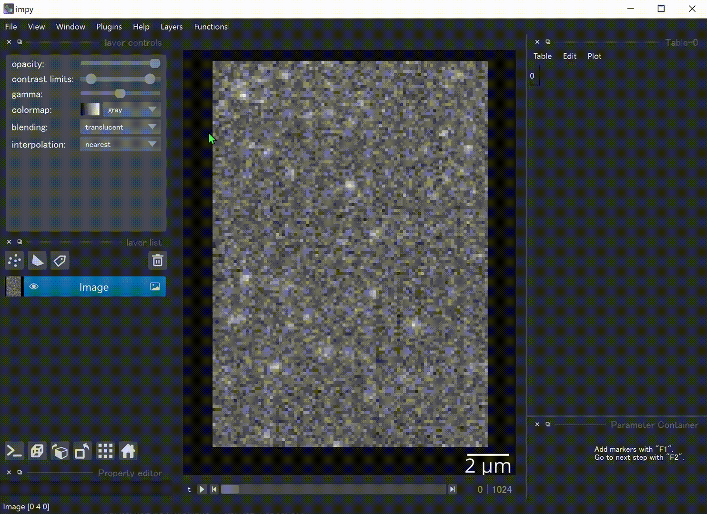

Viewer Tutorial¶
impy provides simple interaction between console and napari.Viewer. The controller object ip.gui has
multiple abilities to make your image processing efficient.
ip.gui can have one figure canvas, many tables and one logger, while each table can also have its own figure.
These are accessible via attributes of ip.gui.
ip.gui.viewer:napari.Viewerobjectip.gui.fig:matplotlib.figure.Figureobjectip.gui.table:impy’sTableWidgetobjectip.gui.log:impy’sLoggerWidgetobject
Contents
Viewer¶
Send Data from Console to Viewer¶
You can add any objects (images, labels, points, …) to the viewer by ip.gui.add(...). ip.gui can determine
layer types according to the instance type.
Add images
When ImgArray, PhaseArray, LazyImgArray, or path to the image file are given, an Image layer with
proper settings will be created. If np.ndarray or dask.array.core.Array are given, they will be converted to
plausible array types that are compatible with impy and similarly send to the viewer.
import impy as ip
# Basically you'll run ...
img = ip.imread("path/to/img.tif")
ip.gui.add(img)
# This also works
ip.gui.add("path/to/img.tif")
If LazyImgArray is given, or a path is given but the image size is too large, then image is loaded as dask
array so that it will be viewed as “virtual stack”, i.e., read from the disk every time it is needed to. However,
viewing large images is not as slow as you expect because image data will be cached by methods in dask.cache.
Add labels
When Label or ImgArray that has labels attribute are given, a Labels layer will be created. View
of labels will be passed to the viewer as numpy.ndarray so that when either values are changed it will affect
the other.
ip.gui.add(img)
img.labels.delete_label(1) # this affects viewer's labels layer
You can also manually draw a label directly as Label anchored on ImgArray by pushing “Label” button on the
lower-left corner.
Add points
When MarkerFrame or TrackFrame are given, a Points layer will be created.
mols = img.find_sm() # find single molecules
ip.gui.add(img) # add image
ip.gui.add(mols) # add points
Add table widgets
When PropArray or pandas.DataFrame are given, an Excel-like table widget will be added on the right side of
the viewer. If you want to get coordinates of a Points layer or Tracks layer as a table widget, select the
layer and push the “(x,y)” button on the lower-left corner.
You can also add a new table by calling ip.gui.add_table()
Add shapes layer as an text layer
“Text” button on the lower-left corner. You can easily edit the text using the widget “Property Editor”.
Get impy Objects from Viewer¶
The napari.Viewer object is accessible via ip.gui.viewer, so that basically you can call any method from it.
However, methods that are frequently used are again defined in ip.gui, in a simpler form.
When you want to get i-th layer, you can use
ip.gui.layers[i]instead ofip.gui.viewer.layers[i]. Becauseimpyobjects such asImgArrayare directly passed to layer objects, you can recoverimpyobject byip.gui.layers[i].data.
Example: Apply Gaussian filter to the first image in the viewer, and againg send the result to the viewer.
img_filt = ip.gui.layers[0].gaussian_filter()
ip.gui.add(img_filt)
When you want to get the i-th selected layers’
impyobjects, you only have to callip.gui.selection[i]instead of some long scripts likeip.gui.viewer.layers[list(ip.gui.viewer.selection)[i]]. Propertyip.gui.selectionreturns list of selectedimpyobjects as a list.
Example: Make an image Z-stack from all the selected images in the viewer.
img_stack = np.stack(ip.gui.selection, axis="z")
The easiest way to get certain type of layer’s data is to use
ip.gui.getmethod. You can choose layer types such as “image”, “points” etc., or shapes layer’s type such as “rectangle”, “line” etc.
Examples
ip.gui.get("image") # get the front image
ip.gui.get("image", layer_state="selected", returns="all") # get all the selected images as a list
ip.gui.get("line", layer_state="visible") # get all the lines from the front visible shapes layer.
Get or Set Current Slice¶
We usually want to get a slice of an image stack from the viewer. However, there is no straightforward way to get the image
slice being displayed on the viewer. impy provides a simple way to do that, with ip.gui.current_slice.
ip.gui.current_slice # Out: (4, slice(None, None, None), slice(None, None, None))
# get the front image slice
ip.gui.get("image")[ip.gui.current_slice]
If you want to go to other view, you can use ip.gui.goto method. This method is very simple.
ip.gui.goto(t=4) # Change t-dimension of current_step to 4 while keep others.
Mouse Callbacks¶
There are several custom mouse callbacks in addition to the basic ones in napari.
When you’re drawing shapes, you’ll find shape information as a text overlay in the upper left corner.
You can drag shapes with right click.

Alt+ mouse drag -> lateral translationAlt+Shift+ mouse drag -> lateral translation restricted in either x- or y-orientation (left button or right button respectively).Alt+ mouse wheel -> rescalingCtrl+Shift+R-> reset original states.
Keyboard Shortcuts¶
Ctrl+Shift+A-> Hide non-selected layers. Display all the layers by push again.Ctrl+Shift+F-> Move selected layers to front.Ctrl+Shift+D-> Duplicate the selected layer. If an image layer is selected, an dialog box opens.Ctrl+Shift+X-> Crop selected image-layers with all the rectangles in selected shape-layers. Rotated cropping is also supported!/-> Reslice selected image-layers with all the lines and paths in selected shape-layers. Result is stored inip.gui.resultsfor now.Ctrl+Shift+E-> Open an explorer widget.Ctrl+P-> Projection of the selected layer. If an image layer is selected, an dialog box opens.Ctrl+G/Ctrl+Shift+G-> Link/Unlink layers. Like “grouping” in PowerPoint.Alt+Up/Down-> Change z-focus (overwrotenapari’s default because it is errorous)[/]-> Go to and focus on previous/next point or shape.
Others¶
Note pad in
Window > Note.Call
impy.imreadin “File > imread …”.Call
impy.imsavein “File > imsave …”.Call
pandas.read_csvand add an table widget in “File > pandas.read_csv …”.Open explorer widget in “File > Open explorer”.
Figure¶
Interactivity¶
When launched from impy, napari’s viewer is implemented with a highly interactive figure canvas. You can drag
the figure with mouse left button, call tight_layout with double click, resize with wheel and stretch the graph
with mouse right button.
How to Use Figure Canvas from Console¶
The backend in napari is available via ip.GUIcanvas. Only during function call in ip.gui.bind, the backend
is always switched to it. However, You can fully switch to ip.GUIcanvas:
# change the backend
import matplotlib as mpl
mpl.use(ip.GUIcanvas)
# "plt" in GUI canvas
plt.figure()
plt.plot(np.random.random(100))
plt.show()
Figure is also accessible via ip.gui.fig, so that you can use it without changing the backend.
ax = ip.gui.fig.add_subplot(111)
ax.plot(np.random.random(100))
ip.gui.fig.canvas.draw() # This line is needed to update canvas.
Table¶
Basic usage¶
This widget is implemented by the class TableWidget. Unlike the pure QTableWidget, it is much more user friendly.
It can have its own figure canvas, independent of that in the viewer. Of course, the canvas is interactive. It is provided as an dock widget of
TableWidgetso that you won’t be confused when you have a lot of tables.You can edit data and header, plot the selected data, and get access to the whole data from the console.

You can find useful function in the menu bar.
- “Table” menu … This menu contains functions that refer to the table and its contents but do not change the data.
“Copy all”/”Copy selected”: Copy the contents into clipboard. You can paste it directly as csv style.
“Store all”/”Store selected”: Store all the contents as
pandas.DataFrametemporary item inip.gui.results.“Resize”: Resize column width to fit the contents.
“Restore linked layer”: Add linked layer if it was deleted from the layer list.
“Delete widget”: Delete table from the viewer. Figure canvas will also be deleted.
- “Edit” menu … This menu contains functions that will change the contents of the table.
“Header to top row”: Move the header to the top of the table. New header will be named with sequential integers.
“Append row”: Add a new row in the bottom.
“Append column”: Add a new column on the right.
“Delete selected rows”: Delete all the rows that selected cells exist. Index number will NOT be renamed.
“Delete selected columns”: Delete all the columns that selected cells exist. Index number will NOT be renamed.
- “Plot” menu … This menu contains functions that can plot the contents of the table.
“Plot”: Plot selected data on the figure canvas, as a dock widget in the table widget.
“Histogram”: Show histogram of selected data on the figure canvas, as a dock widget in the table widget.
“Setting …”: Settings of plot, which is the options of
plotandhistfunction ofpandas.DataFrame.
The lastly added table is accessible via ip.gui.table. You can append data by calling ip.gui.table.append(...).
Link table with layers¶
Just like ImageJ ROI manager, you usually want to link shapes/points, their properties and table rows. For instance, you may want to add rectangles in a shapes layer, measure the mean intensity of an image for each rectangle and store the measurement results in a table to see or plot the results.
impy provides useful functions for this purpose. You can add shapes/points and at the same time append a 1-D data to
the bottom of a table. They are linked to each other so that you can jump to any shapes/points by double-clicking one of
the table rows.
# Like "append" function ...
ip.gui.table.append({"ID": 0, "value": 0.5})
# ... you can add a point and link it to a table row
ip.gui.register_points([0, 0], # Point coordinate. By default the cursor position will be added.
face_color="yellow",
edge_color="white",
properties={"ID": 0, "value": 0.5} # This dictionary will be appended to a table.
)
# ... or add a line and link it to a table row
ip.gui.register_points([[0, 0], [100, 50]], # Shape data. By default the cursor position will be added.
shape_type="line",
face_color="yellow",
edge_color="white",
properties={"ID": 0, "value": 0.5} # This dictionary will be appended to a table.
)
See examples and GIF in “Plug Custom Functions into GUI” section below.
Logger¶
impy’s viewer also provides a logger widget, which would be useful to print some information. It is accessible via
ip.gui.log. You can append log by calling ip.gui.log.append(...).
If you want to show all the printed strings in the logger, you can use context manager ip.setLogger.
import logging
with ip.gui.use_logger():
# both will be printed in the viewer's logger widget
print("something")
logging.warning("WARNING")
Explorer¶
You can open a read-only explorer widget inside the viewer, from “File” menu or shortcut “Ctrl+Shift+E”. From the explorer you can open files by double-clicking them, or filter files with wildcard strings. When a file is copied by “Ctrl+C” its absolute path is always copied to the clipboard.
Text File Viewer¶
When you double-clicked a txt file in the explorer, a read-only text file viewer widget is added to the viewer. You can search by words or regular expressions in the widget. This widget is very useful when you want to view an image file and refer to its metadata file at the same time.
Plug Custom Functions into GUI¶
In image analysis, you usually want to set parameters using manually drawn shapes or points. You don’t have
to do that by getting properties of the viewer for every function call. impy provides easier way to integrate
your function to napari. Just decorate your function with @ip.gui.bind and call function with keybind “F1”.
Of course, abovementioned figure canvas, table, logger are all accessible during function calls. Fully utilize them
to make your plugin nice.
Examples¶
Marking single molecule movie with centroid-aided auto centering.
This is the most simple but practical example. Regsiter centroid with register_point function, and you can jump
to any points by double-clicking table rows.
from skimage.measure import moments
@ip.gui.bind
def func(gui):
# Get cursor position
# Because we want to mark in 2D, we have to split (x,y) from others.
img = gui.get("image")
*multi, y, x = gui.cursor_to_pixel(img)
# Get 2D image around cursor by slicing with "gui.current_slice"
y0 = y-4
x0 = x-4
img0 = img[gui.current_slice][y0:y0+9, x0:x0+9]
img0 = img0 - img0.mean() # normalize
# calculate centroid
M = moments(img0.value)
cy, cx = M[1, 0]/M[0, 0] + y0, M[0, 1]/M[0, 0] + x0
point = multi + [cy, cx]
gui.register_point(point, properties={"x":cx, "y":cy})
return None
Fit filament tips to sigmoid function
This is an example of binding a function with plot function. A figure canvas will be automatically generated.
Because plt.figure will be called for every function call, figure canvas is cleared every time you push “F1”.
from scipy.optimize import curve_fit
import numpy as np
def model(x, x0, sg, a, b):
"""
Sigmoid function.
"""
return a/(1 + np.exp(-(x-x0)/sg)) + b
@ip.gui.bind
def fit(gui):
# get line scan from viewer
img = gui.get("image") # get the first image
line = gui.get("line") # get the last line in the last shapes layer
scan = img.reslice(line) # line scan
# fitting
xdata = np.arange(len(scan))
p0 = [len(xdata)/2, 1, np.max(scan)-np.min(scan), np.min(scan)]
params, _ = curve_fit(model, xdata, scan, p0=p0)
# plot the raw profile and the fitting result
plt.figure()
plt.plot(scan, color="lime", alpha=0.5)
plt.plot(model(xdata, *params), color="crimson")
plt.scatter(params[0], model(params[0], *params), color="crimson", marker="+", s=260)
plt.show()
return params

Draw Gaussian points with different sizes
ip.gui.bind also supports calling functions with additional parameters. magicgui.widgets.create_widget
is called inside to infer proper widgets to add, so that in this case you must annotate all the additional
parameters. The example below also shows that updating data inplace immediately updates layers as well.
import numpy as np
@ip.gui.bind
def draw_gaussian(gui, sigma:float=2):
img = gui.get("image")
y, x = np.indices(img.shape)
my, mx = gui.viewer.cursor.position
gauss = np.exp(-((x-mx)**2 + (y-my)**2)/sigma**2)
img += gauss
Plugin Protocols¶
In image analysis, several steps of different manual operation are often needed. You have to add instructions, make new widgets and implement all the probable error handlings.
In impy, you can make this kind of image analysis, here I call “protocol”, much more easily than ever. ip.gui’s
decorator method bind_protocol provides several functions that cover most of demands in terms of making plugin that
people won’t have difficulty using it.
First you have to make a “protocol function” that will yield functions as a generator.
@ip.gui.bind_protocol
def protocol(gui):
def step1(gui, param1=1, string="name"):
...
# do step-1 twice
yield step1
yield step1
def step2(gui, param2=3.0):
...
# do step-2 once
yield step2
# end protocol
return ...
In this most basic form, every time you push “F1”, functions are called one by one. Widgets that enable parameter input will be prepared every time new function is generated.
If your analysis is a little bit complicated, you may want to add instructions for each step. It can be achieved by writing docstring to each function.
@ip.gui.bind_protocol
def protocol(gui):
def step1(gui, param1=1, string="name"):
"""
This is docstring.
In this step, do something and something.
And push "F1"
"""
...
However, it is still not enough. For instance, with these options you’ll be at a loss when you need to implement
function “choose as many points as you want, and go to next step”. Apparently you need at least two buttons. To
achieve this, bind_protocol prepares two keys: “F1” for mainly running same step while “F2” for proceeding to next
step. Which button you pushed can be distinguished by ip.bui.proceed attribute. It takes False if “F1” is
pushed while takes True otherwise. Now, functions “know” whether you want to proceed or not.
@ip.gui.bind_protocol
def protocol(gui):
pos = []
def get_cursor_position(gui):
if not gui.proceed: # This "if" is necessary if you don't want to call function when "F2" is pushed
pos.append(gui.cursor_pos)
while not gui.proceed: # Repeat until "F2" is pushed
yield get_cursor_position
# next step ...
Here’s a practical example. This class is designed to conduct following analysis:
Manually select (x, y) coordinates.
Select target image.
Label selected image
radiuspixels around coordinates.Measure time-series mean intensity changes int each label.
class Measure:
def __init__(self):
self.image = None
self.labels_layer = None
def select_molecules(self, gui):
"""
Add markers with "F1".
Go to next step with "F2".
"""
if gui.proceed:
return
gui.register_point(gui.cursor_pos[-2:])
def select_image(self, gui):
"""
Select target image and push "F1".
"""
self.image = gui.get("image", layer_state="selected")
def label(self, gui, radius:float=3):
"""
Set proper radius to label around markers.
Push "F1" to preview.
Push "F2" to apply.
"""
coords = gui.table.linked_layer.data.astype(np.int32)
kwargs = {"radius":radius, "labeltype":"circle"}
if self.labels_layer is not None:
self.image.specify(coords, **kwargs)
self.labels_layer.data = self.image.labels
else:
self.image.specify(coords, **kwargs)
gui.add(self.image.labels)
self.labels_layer = gui.layers[-1]
def measure(self, gui):
gui.add(self.image.regionprops().mean_intensity)
Using this class, we can make a protocol using only ~10 lines. The comment out # gui table is a mere trick.
Because ip.gui.bind_protocol determines whether add a table widget before you actually need it by looking
over the source code and find “gui.table” (“gui” may vary depending on your definition of the protocol function).
Since it is hidden in the class method, we have to “tell” it we use table widgets to avoid tables suddenly appear.
@ip.gui.bind_protocol
def func(gui):
# gui.table
m = Measure()
while not gui.proceed:
yield m.select_molecules
yield m.select_image
while not gui.proceed:
yield m.label
m.measure(gui)
In the demonstration below, image is projected by standard deviation during protocol to make single molecules easier to see.
